from kplot.utils import set_sns, save_svg, save_pdf, save_show, get_color_dict, get_plt_color, get_hue_big, add_statskplot
kplot is a Python plotting toolkit for exploratory data analysis. It provides reusable helpers for styling figures, scatter and embedding plots, categorical summaries, heatmaps, hierarchical clustering, and related ranking workflows.
Installation
pip install python-kplotQuick start
The examples below follow the notebooks under nbs/ in order. Each function example lives in its own cell and starts with a short comment derived from the function docstring.
01 utils
import seaborn as sns
from matplotlib import pyplot as plt
# Set up the objects used by the examples below.
df = sns.load_dataset('tips')
df.shape(244, 7)# Set seaborn defaults for notebook display and saved figures.
set_sns(dpi=50)# Save the current matplotlib figure as SVG with editable text.
plt.figure()
plt.plot([0, 1], [0, 1])
# save_svg(Path('nbs') / '_tmp_utils.svg')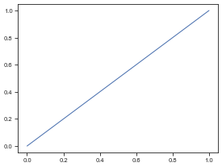
# Save the current matplotlib figure as PDF with TrueType fonts.
plt.figure()
plt.plot([0, 1], [1, 0])
# save_pdf(Path('nbs') / '_tmp_utils.pdf')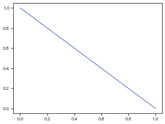
# Show the current figure or save it, then close open figures.
plt.figure()
plt.plot([0, 1], [0.5, 0.5])
# save_show(path=Path('nbs') / '_tmp_utils_show.png')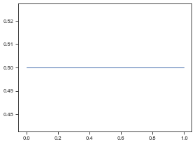
# Assign colors to labels while tolerating duplicate category names.
get_color_dict(['A', 'B', 'C'], palette='Set2'){'A': (0.4, 0.7607843137254902, 0.6470588235294118),
'B': (0.9882352941176471, 0.5529411764705883, 0.3843137254901961),
'C': (0.5529411764705883, 0.6274509803921569, 0.796078431372549)}# Return colors in plotting order for a dict, list, or named palette.
get_plt_color('Set2', ['a', 'b'])# Filter a hue column down to categories that meet a count threshold.
# get_hue_big(df, 'day', cnt_thr=40).tolist()# If `value` is str: compare between groups (x=group, y=value) If `value` is list/tuple: compare among values within each group (x=group, hue='variable')
fig, ax = plt.subplots(figsize=(5, 4))
sns.boxplot(data=df, x='sex', y='total_bill', ax=ax)
add_stats(ax, df, value='total_bill', group='sex')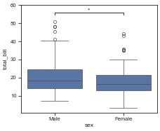
02 scatter
from kplot.scatter import reduce_feature, plot_2d, plot_cluster, plot_relimport seaborn as sns
# Set up the objects used by the examples below.
df = sns.load_dataset('penguins').dropna().reset_index(drop=True)
df2 = df[['bill_length_mm', 'bill_depth_mm', 'flipper_length_mm', 'body_mass_g']]
print(df.shape)
print(df2.shape)(333, 7)
(333, 4)# Reduce a feature matrix to a lower-dimensional embedding dataframe.
reduce_feature(df2, method='pca', n=2)| PCA1 | PCA2 | |
|---|---|---|
| 0 | -457.325073 | -13.351587 |
| 1 | -407.252205 | -9.179113 |
| 2 | -957.044676 | 8.160444 |
| 3 | -757.115802 | 1.867653 |
| 4 | -557.177302 | -3.389158 |
| ... | ... | ... |
| 328 | 718.068699 | 2.338199 |
| 329 | 643.090909 | 4.280699 |
| 330 | 1543.098355 | -2.232010 |
| 331 | 992.994900 | -4.605154 |
| 332 | 1193.002584 | -5.417312 |
333 rows × 2 columns
# Plot the first two columns of an embedding dataframe.
df2 = reduce_feature(df[['bill_length_mm', 'bill_depth_mm', 'flipper_length_mm', 'body_mass_g']], method='pca', n=2)
df2['species'] = df['species'].values
plot_2d(df2, hue='species', legend=True)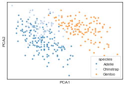
# Reduce features and immediately plot the first two embedding dimensions.
plot_cluster(df[['bill_length_mm', 'bill_depth_mm', 'flipper_length_mm', 'body_mass_g', 'species']], method='pca', hue='species', legend=True)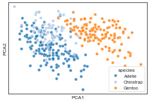
# Plot a pairwise relationship with an optional correlation annotation.
df2 = df[['bill_length_mm', 'flipper_length_mm', 'species']].head(12).copy()
df2.index = [f'pt{i}' for i in range(len(df2))]
plot_rel(df2, x='bill_length_mm', y='flipper_length_mm', hue='species', index_list=['pt0', 'pt11'])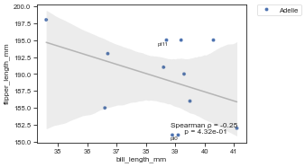
03 bar
from kplot.bar import plot_hist, plot_count, plot_bar, plot_group_bar, plot_stacked, plot_violin, plot_box, plot_pie, plot_cnt, calculate_pct, plot_compositionimport seaborn as sns
# Set up the objects used by the examples below.
df = sns.load_dataset('tips').dropna()
df.shape(244, 7)# Plot a histogram with a KDE overlay and polygon bins.
plot_hist(df, 'total_bill')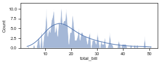
# Plot horizontal counts from a value-count series.
plot_count(df['day'].value_counts())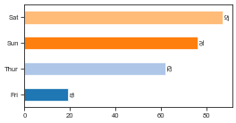
# Plot a bar chart from an unstacked dataframe.
plot_bar(df, value='total_bill', group='day')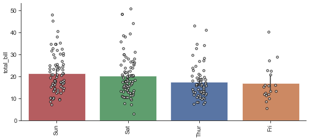
# Plot grouped bars after melting multiple value columns.
plot_group_bar(df, value_cols=['total_bill', 'tip'], group='day')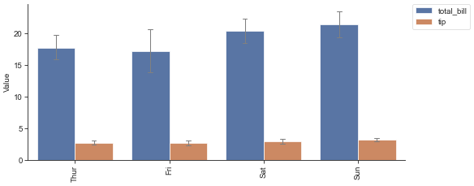
# Plot stacked counts for a categorical column.
plot_stacked(df, group='day', hue='sex')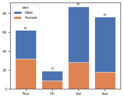
# Plot violin plots with optional strip dots.
df2 = df[['time', 'total_bill']].rename(columns={'time': 'variable', 'total_bill': 'value'})
plot_violin(df2)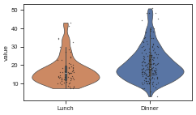
# Plot a box plot ordered by the group median.
plot_box(df, value='total_bill', group='day')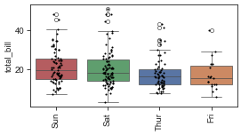
# Plot a pie chart from a value-count series.
plot_pie(df['day'].value_counts())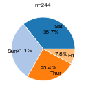
# Plot vertical counts with labels above the bars.
plot_cnt(df['day'].value_counts())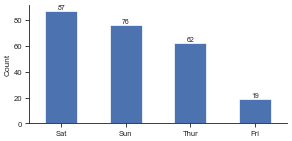
# Calculate within-bin percentages for a stacked composition chart.
df2 = sns.load_dataset('titanic').dropna(subset=['class', 'sex']).reset_index(drop=True)
calculate_pct(df2, 'class', 'sex')| sex | female | male |
|---|---|---|
| class | ||
| First | 43.518519 | 56.481481 |
| Second | 41.304348 | 58.695652 |
| Third | 29.327902 | 70.672098 |
# Plot stacked percentages for a bin-by-category composition.
plot_composition(df2, 'class', 'sex')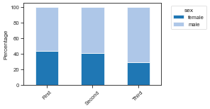
04 heatmap
from kplot.heatmap import get_similarity, plot_corr, plot_confusion_matriximport seaborn as sns
# Set up the objects used by the examples below.
df = sns.load_dataset('titanic').dropna(subset=['age', 'fare', 'class', 'sex', 'survived']).reset_index(drop=True)
df2 = df[['age', 'fare', 'sibsp', 'parch']].head(8).copy()
df2.index = [f'row_{i}' for i in range(len(df2))]
print(df.shape)
print(df2.shape)(714, 15)
(8, 4)# Calculate both distance and similarity matrices for a dataframe.
get_similarity(df2)[0]| row_0 | row_1 | row_2 | row_3 | row_4 | row_5 | row_6 | row_7 | |
|---|---|---|---|---|---|---|---|---|
| row_0 | 0.000000 | 66.001996 | 4.177993 | 47.657345 | 13.062925 | 54.911521 | 24.415786 | 6.714166 |
| row_1 | 66.001996 | 0.000000 | 64.492435 | 18.429118 | 63.312323 | 25.182682 | 61.821302 | 61.188418 |
| row_2 | 4.177993 | 64.492435 | 0.000000 | 46.073643 | 9.000868 | 52.100901 | 27.548548 | 3.910651 |
| row_3 | 47.657345 | 18.429118 | 46.073643 | 0.000000 | 45.061097 | 19.066500 | 46.039121 | 42.780883 |
| row_4 | 13.062925 | 63.312323 | 9.000868 | 45.061097 | 0.000000 | 47.754949 | 35.618122 | 8.803791 |
| row_5 | 54.911521 | 25.182682 | 52.100901 | 19.066500 | 47.754949 | 0.000000 | 60.513388 | 48.906725 |
| row_6 | 24.415786 | 61.821302 | 27.548548 | 46.039121 | 35.618122 | 60.513388 | 0.000000 | 27.089433 |
| row_7 | 6.714166 | 61.188418 | 3.910651 | 42.780883 | 8.803791 | 48.906725 | 27.089433 | 0.000000 |
# Plot a square matrix with an optional triangular mask.
plot_corr(df[['age', 'fare', 'sibsp', 'parch']].corr(numeric_only=True))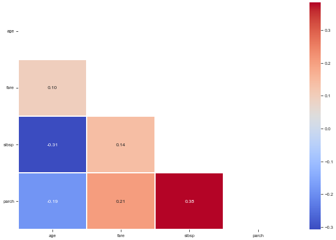
# Plot a confusion matrix from target and prediction arrays.
plot_confusion_matrix(df['survived'], df['adult_male'], class_names=['False', 'True'], normalize=True)Normalized confusion matrix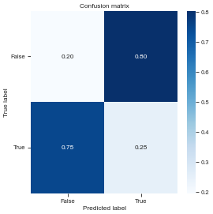
05 hierarchical
from kplot.hierarchical import get_1d_distance, get_1d_distance_parallel, get_Z, plot_dendrogram, get_hclusterimport pandas as pd,numpy as np,seaborn as sns
from scipy.spatial.distance import euclidean
# Set up the objects used by the examples below.
df0=sns.load_dataset("iris")
df = df0.drop(columns="species")
def my_distance(u, v):
return np.sum(np.abs(u - v))
A = np.array([[0, 0], [1, 1], [2, 2]])
df0.head()| sepal_length | sepal_width | petal_length | petal_width | species | |
|---|---|---|---|---|---|
| 0 | 5.1 | 3.5 | 1.4 | 0.2 | setosa |
| 1 | 4.9 | 3.0 | 1.4 | 0.2 | setosa |
| 2 | 4.7 | 3.2 | 1.3 | 0.2 | setosa |
| 3 | 4.6 | 3.1 | 1.5 | 0.2 | setosa |
| 4 | 5.0 | 3.6 | 1.4 | 0.2 | setosa |
# Compute 1D distance (like pdist from scipy) but for df with column names
# return 1d distance
get_1d_distance(pd.DataFrame(A),func_flat=my_distance)100%|██████████| 3/3 [00:00<00:00, 3381.59it/s]array([2, 4, 2])# Parallel compute 1D distance for each row in a dataframe given a distance function
# get_1d_distance_parallel(df, func_flat=my_distance)# Get linkage matrix Z from pssms dataframe
Z = get_Z(df,func_flat=euclidean,parallel=False)100%|██████████| 150/150 [00:00<00:00, 532.10it/s]# Run the example.
plot_dendrogram(Z,dense=10,labels=df.index,thr=0.5)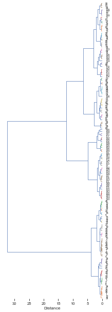
# Get flat cluster assignments from hierarchical clustering linkage matrix `Z`.
get_hcluster(df,labels=df0['species'].tolist(),thr=5,dense=10)0 1
1 1
2 1
3 1
4 1
..
145 2
146 4
147 2
148 2
149 4
Length: 150, dtype: int32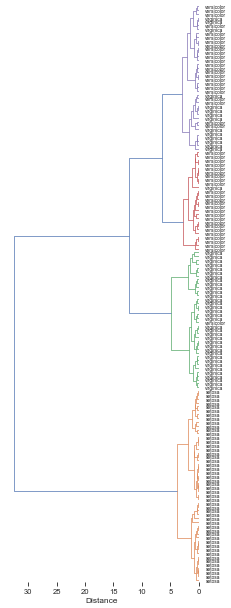
06 ranking
from kplot.ranking import plot_rank, get_AUCDFimport seaborn as sns
# Set up the objects used by the examples below.
df = sns.load_dataset('tips')
df.shape(244, 7)# Plot a ranked scatter and annotate the highest and lowest entries.
sort_df=df.sort_values('total_bill').copy()
sort_df['id'] = sort_df.index.astype(str)plot_rank(sort_df, x='id', y='total_bill', n_hi=10, n_lo=10)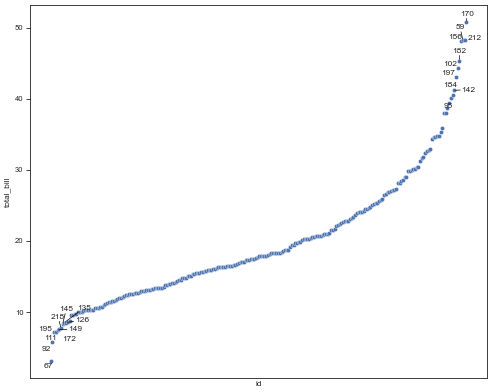
# Compute the normalized area under an empirical CDF over rank values.
get_AUCDF(df, 'total_bill', plot=True)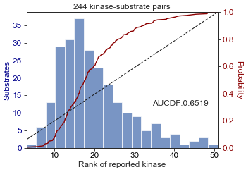
0.6519265042202643